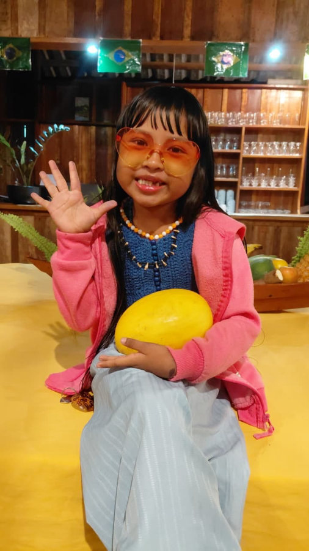

We had a very special guest at Vista do Lago this weekend. Yandra Mawé — the little girl the internet lovingly calls the "Oncinha do Amazonas", the Amazon's little jaguar — came to spend a few days with us. She's only six, and she's already won over the whole country by sharing, in her own bright and funny way, the life and culture of the Sateré-Mawé and Ticuna peoples. Best of all, she's from a community right here in our part of the Amazon.

One Girl, Two Cultures
Yandra is growing up between Sateré-Mawé and Ticuna traditions, in the community of Sahu-Apé. In her videos, culture isn't something behind glass in a museum — it's everyday life: the body paint, the language, the food, the forest. That living, breathing Amazon is exactly the one we love to welcome and share here at the lodge.
A Weekend with Us
For a few days, the lodge felt a little brighter. Between the river, the forest and the long table where everyone gathers for meals, Yandra was exactly who she is online — curious, playful and completely herself. Moments like this are what give this place its soul. The Amazon isn't only a landscape; it's the people who call it home.
The Video That Went Viral
Within just a few hours, the video Yandra posted from her visit had already passed 5,000 likes and hundreds of comments — and it's still climbing. Press play and meet her for yourself:
Follow Yandra at @yandramawe on Instagram.
The Amazon Is Its People
Vista do Lago is surrounded by communities like Yandra's, and welcoming stories like hers is what this place is really about. Come and live the real Amazon with us — the one with a face, a voice and a great big laugh.